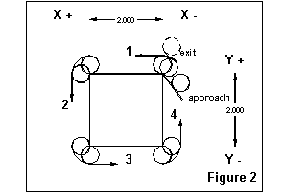
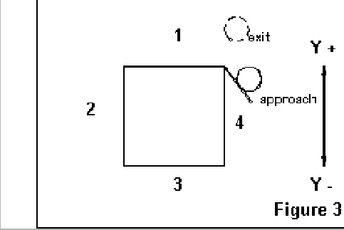
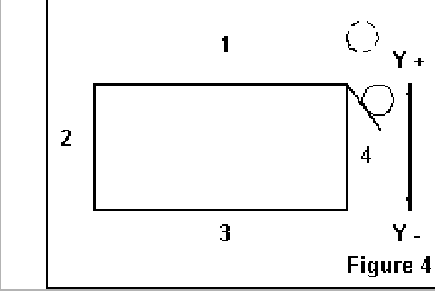
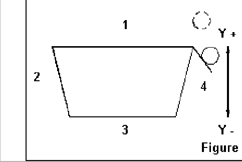
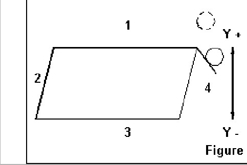
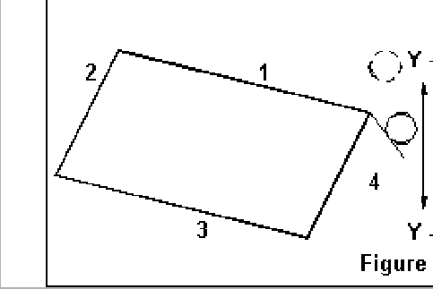
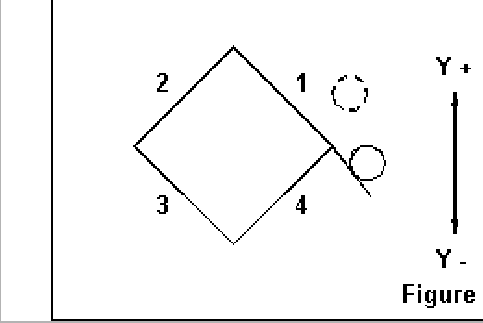
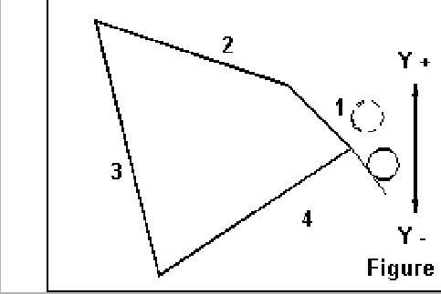

|
This example is more complicated than what you have seen so far. Our
task is to mill a four cornered object that has all outside corners
using tool diameter compensation. This object could be a square, a
rectangle, a parallelogram, a trapezoid, or an object where none of
the angles and sides are the same.
|
|

|
We need to tell the machine all of the following information.
N0130 G53 G0 X0 Y0 Z0 (send the machine to machine
home)
N0140 G17 T1 M6 M0 (load tool 1)
N0150 G40 H1 G55 X0 Y0 Z0 (pick up tool length
and move to coordinate home)
N0160 X-1 Y-0.5 (45 degree approach point with
0.5 tool radius offset)
N0170 Z-2.5 (milling depth)
N0180 G1 F10 G41 X0 Y0 M8 (approach first corner
with coolant)
N0190 X2 (mill first side)
N0200 Y-2 (mill second side)
N0210 X0 (mill third side)
N0220 Y0 (mill fourth side)
N0230 G49 Y0.25 M9 (turn off comp and coolant
and clear part)
N0240 G0 Z0 (retract Z)
N0250 G53 X0 Y0 Z0 (move back to machine home)
N0260 M2 (program end)
The size and shape of the part can be changed and depend upon the actual numbers entered in lines numbered 190 to 220. Suppose we wanted to cut a trapezoid with the small side one inch less that the long side. This could easily be made trapezoidal by changing those lines as table 5 lists. A set of these sample shapes is shown in table 8.
Changes required for a trapezoid
N0190 X2 (mill first side)
N0200 X1.5 Y-2 (mill second side)
N0210 X0.5 (mill third side)
N0220 X0 Y0 (mill fourth side)
Now the narrow side is one inch smaller than its longer parallel side and the other two are angled in by a half inch. Notice that very few changes needed to be made in the code in order to create the second part. We added both coordinates to the corner definitions and changed the actual numbers. These distance kinds of g-code numbers can be stored as variables. By changing the actual values of these variables we can create many different sizes and shapes using the same set of part program code.
First we need to define a set of variables and what we will use them for.
Variable list for milling the outside of a four sided object
1000 Tool Number
1001 Tool Diameter
1002 Coordinate Reference
1003 Finished depth of cutter
1004 First corner x location
1005 First corner y location
1006 Second corner x location
1007 Second corner y location
1008 Third corner x location
1009 Third corner y location
1010 Fourth corner x location
1011 Fourth corner y location
One small problem that comes up with variable programming is that often you must include the tool diameter both in the tool file and as a variable when it will be used to compute an approach point.
Now all that we have to do is plug in these variable names in place of the hard numbers in the above code. For this more general case, we will include x and y coordinates for each corner. By doing this we can rotate the shape and make non parallel sides. We will also need to set up a computation for the approach in line 40 and the exit in line 110.
The variables and what they do are included in code as comment blocks. This way if the part program and the variable file become separated I can recreate the variable file easily. Including the variables as comments also helps when reading the program and debugging a setup.
Milling the outside of a four sided object
N10 (1000 Tool Number)
N20 (1001 Tool Diameter)
N30 (1002 Coodinate Reference)
N40 (1003 Finished Depth of cut)
N50 (1004 First corner x location)
N60 (1005 First corner y location)
N70 (1006 Second corner x location)
N80 (1007 Second corner y location)
N90 (1008 Third corner x location)
N100 (1009 Third corner y location)
N110 (1010 Fourth corner x location)
N120 (1011 Fourth corner y location)
N130 G0 G53 X0 Y0 Z0 (machine home)
N140 G17 T#1000 M6 M0 (load tool)
N150 G43 H#1000 G#1002 X0 Y0 Z0 (move to offsets)
N160 X[-1*#1001] Y[-1*[#1001/2]]
(45 degree approach)
N170 Z[-1*#1003] (tool to depth)
N180 G1 f10 G41 D#1000 X#1004 Y#1005 M8 (comp,
cool, and approach corner)
N190 X#1006 Y#1007 (mill first side)
N200 X#1008 Y#1009 (mill second side)
N210 X#1010 Y#1011 (mill third side)
N220 X#1004 Y#1005 (mill fourth side)
N230 G40 Y[#1001/4] M9 (clear part)
N240 G49 T0 M6 G0 Z0
N250 G53 X0 Y0 Z0
N260 M2
There are some limits on how far you can rotate this part using the four corners. A useful rule is that the line between the first corner and the second should not be more than 45 degrees off of the x axis of the machine or the cutter comp may not work correctly. If the line between the last corner and the first is steeper than a 45 you will get a tool gouge that will not be reported by the EMC.
TABLE 8 Corner values and sample shape
|
|

|
|
|

|
|
|

|
|
|

|
|
|

|
|
|

|
|
|

|
As mentioned earlier, this code and the shapes that can be cut with it is not very easy to read. But you should read through it and substitute the variable description wherever you find a pound sign. When you have done this a few times any program file that uses variables will become easier to understand.